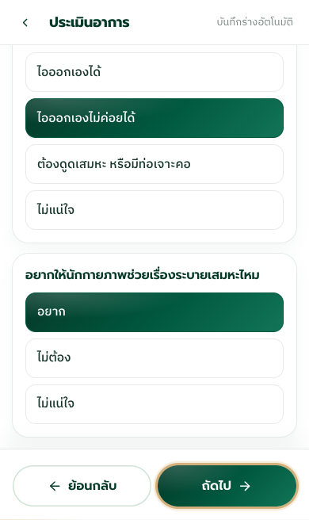
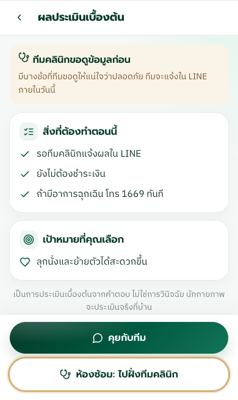
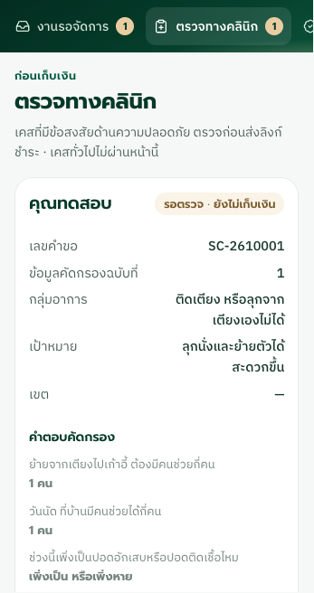
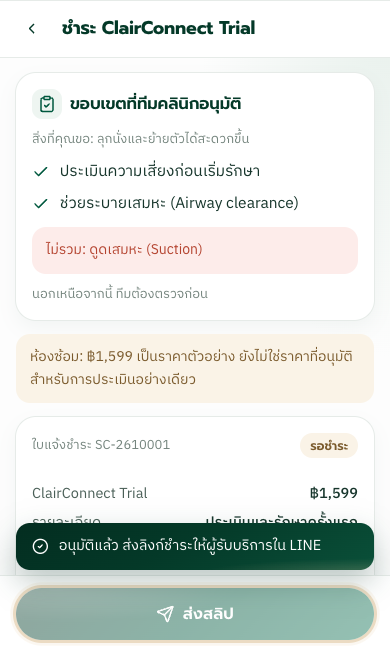
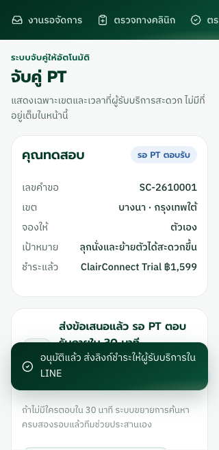
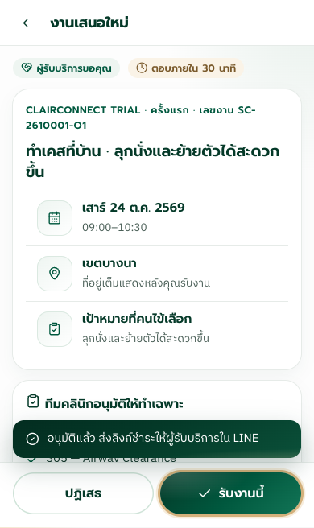
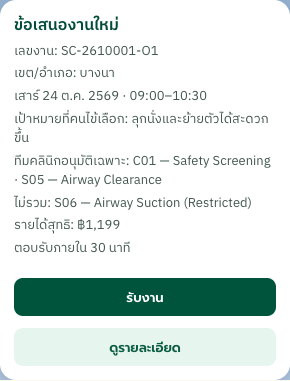
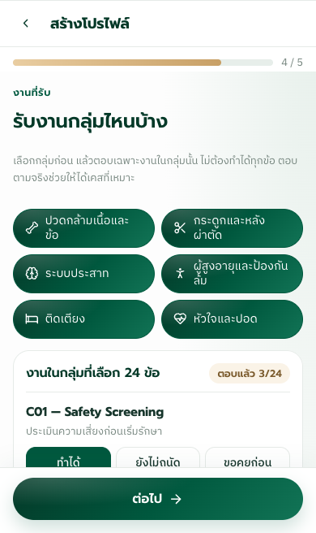
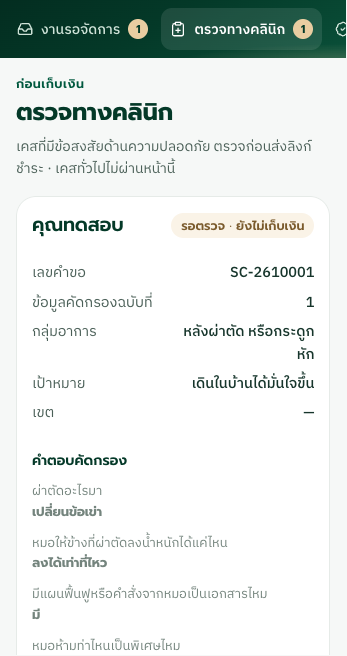
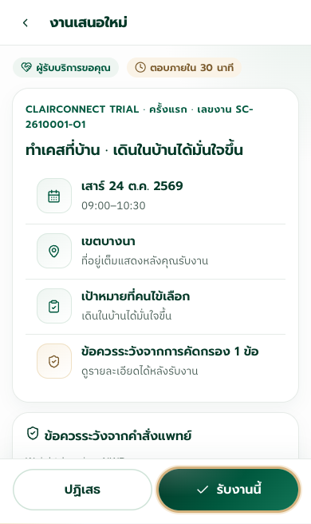

SynaClair · ข้อมูลสมมติ · Simulator เท่านั้น
SynaClair CTO Fix Brief Round 2: Evidence (4 Nov 2026)
สรุป
- ปิด P0 สองข้อใน Simulator แล้ว: BED-04 ต้องผ่านทีมตรวจก่อนจ่ายเงิน และเป้าหมายใน LINE จำลองกับแอปตรงกัน
- เปลี่ยนชื่องานครบ 24 รายการเป็น English Technical Terms โดยไม่แตะรหัสงาน Mapping หรือคำตอบเดิมของ PT
- กฎ Routine หลังผ่าตัด (Q-B) เตรียมไว้แล้ว แต่ ปิดอยู่ รอ Clinical Leads อนุมัติเกณฑ์
- ยังไม่ได้ทำ: กฎ 26 เคส, Case-essential Capability และการขยายค้นหา 30/90 นาทีใน Simulator
- แอปจริงไม่ได้แก้โค้ด และไม่ได้ทดสอบในรอบนี้ ผลทั้งหมดจึงใช้กับแอปจริงไม่ได้
A. Build
| รายการ | ค่า |
|---|---|
| Simulator commit | 995cfeb (branch fix/rehearsal-profile-payment-ref) |
| Rule version | sim-rules-2026-11-04; Q-B routine = Proposed, ปิดอยู่ |
| Spec / Decision | Spec v2.3 + Update v2.4 + Q-A ถึง Q-H ตาม Brief รอบ 2 |
| ไฟล์ที่เปลี่ยน | app.js, screens-patient.js, screens-pt.js, screens-admin.js, qa-round2.mjs, qa-fix.mjs |
| ลิงก์ทดสอบ | https://napphattua.github.io/synaclair-flow-demo/ โค้ด Simulator ตรงกับ 995cfeb (demo commit daa5a48) รันซ้ำบนลิงก์นี้เมื่อ 5 พ.ย. 2569 ใน Chrome: รอบ 2 ผ่าน 56 ข้อ, Regression ผ่าน 41 ข้อ ต่อมาเปลี่ยนหน้าโปรไฟล์ PT (demo commit 804aa32, โค้ด be32a65) และรันซ้ำบนลิงก์อีกครั้ง: ผ่าน 56 + 41 ข้อเท่าเดิม ภาพหลักฐานในหน้านี้ยังเป็นของ 995cfeb |
| Real App / Staging | ไม่มีการแก้หรือ deploy ในรอบนี้ |
| วิธีรันซ้ำ | เปิด Simulator ที่ 127.0.0.1:8765 แล้วรัน node docs/design/rehearsal-simulator/qa-round2.mjs |
ผลด้านล่างมาจากการรัน Flow จริงใน Chrome บน commit นี้ ไม่ใช่การอ่านโค้ด: เทสต์รอบ 2 ผ่าน 56 ข้อ และเทสต์ Regression รอบแรกผ่าน 41 ข้อ
B. สถานะแยกตามระบบ
| เรื่อง | Simulator | LINE จำลอง | Real App | Real LINE | Backend/API |
|---|---|---|---|---|---|
| P0-01 BED-04 | PASS | PASS | NOT IMPLEMENTED | NOT TESTED | NOT TESTED |
| P0-02 เป้าหมายตรงกัน | PASS | PASS | NOT TESTED | NOT TESTED | NOT TESTED |
| Q-B เหตุผลเฉพาะ | PASS | ไม่เกี่ยว | NOT IMPLEMENTED | ไม่เกี่ยว | NOT TESTED |
| Q-B Routine หลังผ่าตัด | PASS เมื่อเปิดสวิตช์ทดสอบ; ปิดเป็นค่าเริ่มต้น | PASS (แสดง NWB) | NOT IMPLEMENTED | NOT TESTED | NOT TESTED |
| ชื่องาน 24 รายการ | PASS | PASS | NOT IMPLEMENTED | NOT TESTED | ไม่เกี่ยว |
| TEST-01 Matching | PARTIAL | PASS (ด่านตอนรับงาน) | NOT IMPLEMENTED | NOT TESTED | NOT TESTED |
| TEST-02 Q-E | PASS | PASS | NOT IMPLEMENTED | NOT TESTED | NOT TESTED |
| TEST-03 Q-F | PASS | PASS | ด่านอยู่หลังสวิตช์ซึ่งปิดอยู่ | NOT TESTED | Unit test ด้วย mock 16 ข้อ; Integration NOT TESTED |
| TEST-04 กฎ 26 เคส | NOT IMPLEMENTED | NOT IMPLEMENTED | NOT IMPLEMENTED | NOT TESTED | NOT TESTED |
| TEST-05 S06 | PASS เฉพาะเส้นทางที่มี; การขยาย 30/90 NOT IMPLEMENTED | PASS | NOT TESTED | NOT TESTED | NOT TESTED |
| REG-01 ถึง REG-06 | PASS | PASS | NOT TESTED | NOT TESTED | NOT TESTED |
C. สิ่งที่ยังไม่ครบ
- TEST-04: Simulator มีแค่ Mapping ระดับ Service ยังไม่มีกฎ 26 เคสหรือระดับงานต่อเคส จึงไม่มีผล Expected/Actual ต่อเคส
- TEST-01: "งานที่จำเป็น" ตอนนี้คือกิจกรรมที่ทีมอนุมัติเท่านั้น เคส Routine ยังไม่ตรวจทักษะรายงาน เพราะยังไม่มี Case-essential Rules
- TEST-01: ใช้ PT ตัวเดียวสลับสถานะเป็น PT A และ PT B เพราะ Simulator มี PT ที่เล่นได้คนเดียว
- การขยายค้นหา 30/90 นาที: มีแค่ข้อความ ไม่มี Flow ให้ทดสอบ
- S05 ใน BED-04: ผู้ตรวจติ๊กได้ แต่ระบบยังไม่บังคับว่าเป็น Required เพราะต้องใช้กฎระดับเคส
- Offer ต่อเนื่องหลายรายการ: Simulator มีคำขอได้ทีละรายการ ทดสอบได้แค่ว่าการ์ดเก่าไม่ปนกับข้อมูลใหม่
- เลขทดสอบ: ทุกคำขอใช้
SC-2610001เพราะ Simulator รีเซ็ตต่อการทดสอบ เลข Offer เปลี่ยนตามขอบเขต เช่นSC-2610001-O1ชุดข้อมูลทดสอบรันซ้ำได้จากสคริปต์
D. ข้อที่ต้องให้ Clinical Leads ตัดสิน
- ผู้ป่วยปอดอาการคงที่ที่ติ๊ก "มีโรคประจำตัว": ตอนนี้เข้า Review เพราะกฎเดิมของโรคประจำตัว แม้ไม่ได้ติดเพราะเสมหะ จะให้ RESP-02 ผ่านข้อนี้อย่างไร
- ติดเตียง ไอไม่ค่อยออก แต่ไม่ได้เพิ่งเป็นปอดอักเสบ: ตอนนี้เป็น Routine เพราะไม่เข้า BED-04 ผมไม่ได้เพิ่มกฎเอง ต้องการให้ Review หรือไม่
- DEC-03: ใครประสานเมื่อข้อมูลเปลี่ยนหลังมีนัด และเงื่อนไขเลื่อนนัด ยกเลิก คืนเงิน (Simulator ไม่ทำอัตโนมัติ)
- DEC-04: ราคาและการยินยอมเมื่ออนุมัติเฉพาะการประเมิน (Simulator แสดงว่า ฿1,599 เป็นราคาตัวอย่าง)
E. ร่าง Q-B Decision Table (Proposed, ยังไม่เปิดใช้)
เงื่อนไขทุกข้อเป็นร่างจาก AI และผม ยังไม่ผ่าน Clinical Validation
| คำตอบ | ผลเมื่อเปิดกฎ | ผลตอนนี้ (ปิดกฎ) |
|---|---|---|
| WBAT หรือ FWB, มีเอกสาร, ไม่มีข้อห้ามที่ไม่ชัด, อุปกรณ์ครบ | Routine | Review พร้อมเหตุผลว่ารอ Validation |
| NWB หรือ PWB, ข้อมูลครบเหมือนกัน | Routine และส่ง WB ไปใน Offer | Review พร้อมเหตุผลว่ารอ Validation |
| ไม่แน่ใจเรื่องการลงน้ำหนัก | Review | Review |
| หมอสั่งแบบอื่น | Review | Review |
| ไม่มีเอกสาร หรือไม่แน่ใจ | Review | Review |
| ข้อห้ามไม่ชัด | Review | Review |
| อุปกรณ์ไม่ครบ หรือไม่แน่ใจ | Review | Review |
| ไม่แน่ใจว่าผ่าตัดอะไร | Review | Review |
| เพิ่งออกจาก รพ. หรือมีข้อห้ามแพทย์ (ข้อ q4) | Review ตามกฎเดิม | Review |
ยังไม่ได้ครอบคลุม: Medical Stability และ Home Readiness
F. ร่างถ้อยคำไทยสำหรับตรวจ Q-G
ทุกข้อเป็นร่าง ยังไม่ผ่านการตรวจ
ปวดกล้ามเนื้อ ข้อ หลัง คอ: ปวดมานานแค่ไหนแล้ว (ไม่ถึง 6 สัปดาห์ / 6 สัปดาห์ ถึง 3 เดือน / เกิน 3 เดือน / ไม่แน่ใจ)
หลังผ่าตัด หรือกระดูกหัก
- ผ่าตัดอะไรมา (เปลี่ยนข้อเข่า / เปลี่ยนข้อสะโพก / ดามเหล็กหรือใส่เหล็กกระดูก / อื่น ๆ / ไม่แน่ใจ)
- หมอให้ข้างที่ผ่าตัดลงน้ำหนักได้แค่ไหน (ลงได้เท่าที่ไหว / ลงน้ำหนักได้เต็มที่ / ลงได้บางส่วน / ห้ามลงน้ำหนัก / หมอสั่งแบบอื่น / ไม่แน่ใจ หรือหมอยังไม่ได้บอก)
- มีแผนฟื้นฟูหรือคำสั่งจากหมอเป็นเอกสารไหม (มี / ไม่มี / ไม่แน่ใจ)
- หมอห้ามท่าไหนเป็นพิเศษไหม (ไม่มีข้อห้าม / มี และรู้ว่าห้ามอะไร / มี แต่ไม่แน่ใจว่าห้ามอะไร หรือไม่แน่ใจ)
- อุปกรณ์ที่หมอสั่ง มีครบไหม (ครบ / ไม่ได้สั่งอะไร / ยังไม่ครบ / ไม่แน่ใจ)
ระบบประสาท: เป็นโรคอะไร (หลอดเลือดสมอง / พาร์กินสัน / บาดเจ็บไขสันหลัง / บาดเจ็บที่สมอง / อื่น ๆ หรือไม่แน่ใจ)
ผู้สูงอายุ: หนึ่งปีที่ผ่านมา หกล้มกี่ครั้ง (ไม่เคยล้ม / 1 ครั้ง / 2 ครั้งขึ้นไป / ไม่แน่ใจ)
ติดเตียง
- ย้ายจากเตียงไปเก้าอี้ ต้องมีคนช่วยกี่คน (ทำเองได้ / 1 คน / 2 คน หรือต้องใช้เครื่องยก / ไม่แน่ใจ)
- วันนัด ที่บ้านมีคนช่วยได้กี่คน (ไม่มี / 1 คน / 2 คนขึ้นไป / มีเครื่องยกที่บ้าน)
- ช่วงนี้เพิ่งเป็นปอดอักเสบหรือปอดติดเชื้อไหม (เพิ่งเป็น หรือเพิ่งหาย / ไม่ได้เป็น / ไม่แน่ใจ)
- ตอนนี้มีเสมหะค้างไหม (ไม่มี / มี / ไม่แน่ใจ)
- ถ้ามีหรือไม่แน่ใจ: ไอเอาเสมหะออกเองได้ไหม (ไอออกเองได้ / ไอออกเองไม่ค่อยได้ / ต้องดูดเสมหะ หรือมีท่อเจาะคอ / ไม่แน่ใจ)
- ถ้ามีหรือไม่แน่ใจ: อยากให้นักกายภาพช่วยเรื่องระบายเสมหะไหม (อยาก / ไม่ต้อง / ไม่แน่ใจ)
หัวใจและปอด: เรื่องเสมหะ ตอนนี้เป็นแบบไหน (ไม่มีเสมหะ / มีเสมหะ ไอออกเองได้ / มีเสมหะ ไอออกเองไม่ค่อยได้ / ต้องดูดเสมหะ หรือมีท่อเจาะคอ / ไม่แน่ใจ)
ข้อความสถานะ
- ระหว่างรอตรวจ: "ทีมคลินิกขอดูข้อมูลก่อน มีบางข้อที่ทีมขอดูให้แน่ใจว่าปลอดภัย ทีมจะแจ้งใน LINE ภายในวันนี้"
- สิ่งที่ต้องทำตอนนี้: "รอทีมคลินิกแจ้งผลใน LINE" · "ยังไม่ต้องชำระเงิน" · "ถ้ามีอาการฉุกเฉิน โทร 1669 ทันที"
- ข้อมูลเปลี่ยนหลังมีนัด: "นัดเดิมยังอยู่ แต่พักกิจกรรมที่เกี่ยวข้องจนกว่าทีมจะแจ้ง" · "ยอดชำระเดิมยังอยู่ ไม่ต้องชำระซ้ำ"
G. หลักฐานตามรอยเคสเดียว (BED-04, คำขอ SC-2610001, Offer SC-2610001-O1, ข้อมูลสมมติ)










H. ผลเทสต์รายข้อ (Simulator และ LINE จำลอง, commit 995cfeb)
| ID | สิ่งที่ตรวจ | ผล |
|---|---|---|
| AC-P0-01A | BED-04 found from choice answers, no typed terms | PASS |
| AC-P0-01B | no QR, payment request or offer before review | PASS |
| AC-P0-01C | reviewer sees the specific reason | PASS |
| AC-P0-01E | S05 can be picked, S06 stays locked | PASS |
| AC-P0-01E | after S05 approval suction is not included | PASS |
| AC-P0-01D | RESP-02 stable sputum, no other flags: routine | PASS |
| AC-P0-01D | bedridden with sputum, coughs it out: not reviewed for sputum alone | PASS |
| P0-01 unknown | "ไม่แน่ใจ" is not read as no risk: phlegm unknown | PASS |
| P0-01 unknown | "ไม่แน่ใจ" is not read as no risk: cough unknown | PASS |
| P0-01 unknown | "ไม่แน่ใจ" is not read as no risk: pneumonia unknown | PASS |
| AC-P0-01F | routine to BED-04 after payment: held, not billed again | PASS |
| AC-P0-02A/B | several goals match, no added goal (QA case) | PASS |
| AC-P0-02D | one goal, different from the sample | PASS |
| AC-P0-02D | goal plus free text | PASS |
| AC-P0-02C | approved activities and limits match | PASS |
| AC-P0-02E | old card cannot accept the old scope | PASS |
| AC-P0-02F | no data from another offer | PASS |
| LABEL-1 | 24 terms, codes as listed, S07 absent | PASS |
| LABEL-2 | service mapping unchanged | PASS |
| LABEL-3 | PT registration shows 24 unique rows with English first | PASS |
| LABEL-4 | S06 locked; earlier PT answers kept | PASS |
| LABEL-5 | admin capability view uses the same names | PASS |
| AC-P1-01E | rule off (Proposed): TKA stays in review, reason names WB and the pending rule | PASS |
| AC-P1-01A | rule on: TKA WBAT complete is not surgery-only review | PASS |
| AC-P1-01B | rule on: ORIF NWB routine, NWB carried in LINE and app | PASS |
| AC-P1-01C | unknown weight-bearing goes to review, rule off | PASS |
| AC-P1-01C | unknown weight-bearing goes to review, rule on | PASS |
| Q-B WB | FWB is kept apart in the reason | PASS |
| Q-B WB | PWB is kept apart in the reason | PASS |
| Q-B WB | Other is kept apart in the reason | PASS |
| AC-P1-01D | equipment missing: specific reason | PASS |
| AC-P1-01D | unclear precautions: specific reason | PASS |
| TEST-01 | PT A with the approved task is eligible | PASS |
| TEST-01 | PT B, S05 not reviewed: excluded, with the reason | PASS |
| TEST-01 | patient asking for this PT cannot bypass | PASS |
| TEST-01 | PT missing a task outside the approved list stays eligible | PASS |
| TEST-01 | rechecked when accepting | PASS |
| TEST-02 | "ขอคุยก่อน" on a needed task: no offer | PASS |
| TEST-02 | auto matching sends nothing | PASS |
| TEST-02 | not approved automatically | PASS |
| TEST-02 | other work still flows | PASS |
| TEST-02 | LINE accept uses the same gate | PASS |
| TEST-03 | no terms: offer cannot be accepted (same action for app and LINE) | PASS |
| TEST-03 | after terms and every gate: accepted | PASS |
| TEST-03 | no terms: schedule is not sent, taken to terms | PASS |
| TEST-05 | S06 requested goes to review | PASS |
| TEST-05 | S06 cannot be ticked | PASS |
| TEST-05 | forcing S06 into an approval is stripped | PASS |
| TEST-05 | assessment approved and paid: offer has no suction | PASS |
| TEST-05 | an allow list holding S06 never matches | PASS |
| REG-03 | emergency shows 1669 and stops the request | PASS |
| REG-05 | no full address or health answers before accept | PASS |
| REG-06 | accepting twice makes one appointment | PASS |
| REG-02 | after booking: kept, held, no start button | PASS |
| REG-02 | visit cannot start | PASS |
| REG-06 | hold keeps payment data | PASS |